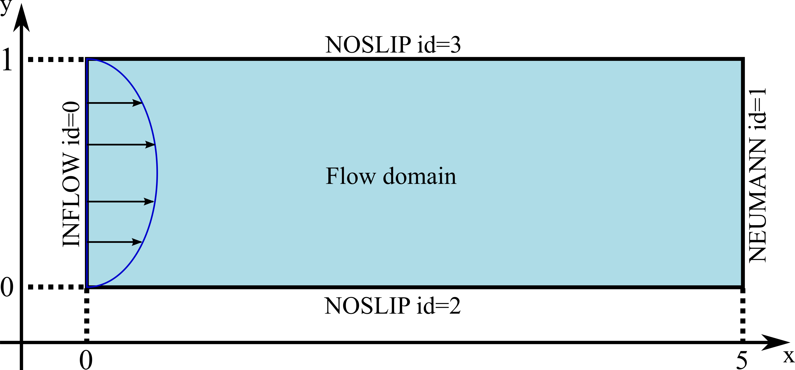
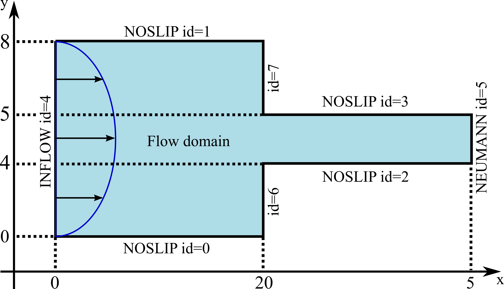
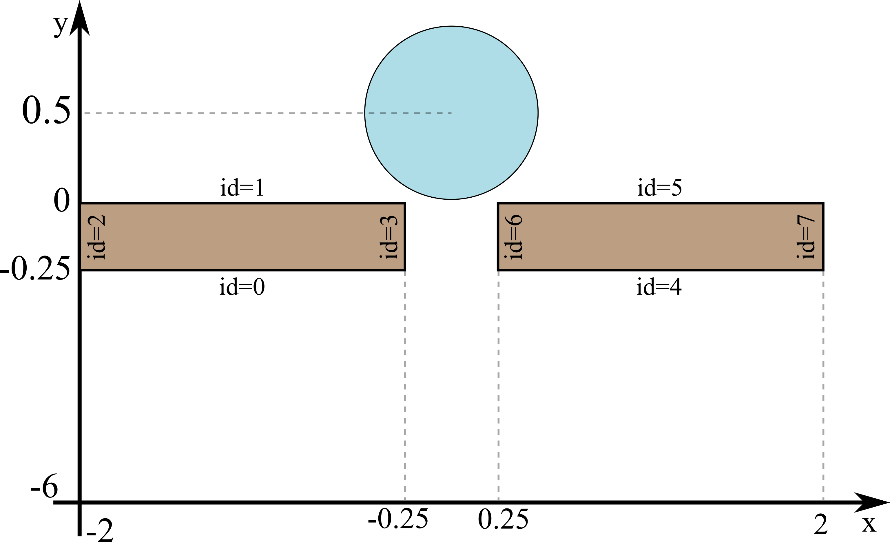

A simulation is described by an input SIMULATION file (extension .sim). This file contains all the information the program will need to initialize the flow with the geometry and parameters you want. In this section, we will create a very basic SIM file that describes a 2D Poisseuile flow, or Channel flow.
The complete SIM file for this example is shown below. Hover your mouse over each coloured element to read some information about them and what they do. All the elements in black, should be kept exactly as they are written here.
When looking at this example, you will notice some important things about the SIM file format:
OUTPUT vtk=[1000 0] backup=0 print=1 pasta=folderChannelFlow
CARTESIANO
Nt 100000
xMin 0.0
xMax 5.0
yMin 0.0
yMax 1.0
tMax 10.0
Re 0.01
Fr 14.27843123 grav=[0.0 -1.0]
param_visco Wi=1.0 beta=0.111111 alpha=0.0 epsilon=0.0
formulacao_visco CSF
tolNSF 1e-6 0.000000e+000 1
tensao_superficial ligado=nao Weber=100.0 tsur=1
VEL_INICIAL [0.0 0.0]
MALHA_EIXO_X tipo=uniforme N=100
MALHA_EIXO_Y tipo=uniforme N=20
BOUNDARY id=0 direcao=vertical posicao=0 inicio=0 fim=1 tipo=INFLOW perfil=parabolico valorDirichlet=1.5
BOUNDARY id=1 direcao=vertical posicao=5 inicio=0 fim=1 tipo=NEUMANN
BOUNDARY id=2 direcao=horizontal posicao=0 inicio=0 fim=5 tipo=NOSLIP movimento=SEM_MOVIMENTO
BOUNDARY id=3 direcao=horizontal posicao=1 inicio=0 fim=5 tipo=NOSLIP movimento=SEM_MOVIMENTO
REGIAO tipo=FULL numFaces=4 faces=0 1 2 3

In this section we will create a simulation for a flow in a contraction geometry. This flow also does not have a moving free surface, so it is similar to the Channel flow from the section above. The SIM file for this simulation is shown below.
The SIM file for this simulation is similar to the Channel flow described in the previous section. The main difference is the mesh definition. In this case we are creating a non-uniform mesh with stretching. To create a stretching mesh, you need to provide the follow information in the SIM file:
OUTPUT vtk=[5000 0] backup=0 print=10 pasta=folderContraction-M[minDxDy]dt[dt]Re[Re]Wi[We]beta[beta]
CARTESIANO
Nt 100000
xMin 0.0
xMax 40
yMin 0.0
yMax 8
tMax 10.0
Re 0.01
Fr 14.27843123 grav=[0.0 -1.0]
param_visco Wi=1.0 beta=0.111111 alpha=0.0 epsilon=0.0
formulacao_visco CSF
tolNSF 0 0 1
tensao_superficial ligado=nao Weber=100.0 tsur=1
VEL_INICIAL [0.0 0.0]
MALHA_EIXO_X tipo=geometrico vertices=(0.0 20 40) param_stretching=([95 0.008 -1] [95 0.008 1])
MALHA_EIXO_Y tipo=geometrico vertices=(0.0 1.5 3 4 5 6.5 8) param_stretching=([45 0.008 1] [45 0.008 -1] [40 0.008 1] [40 0.008 -1] [45 0.008 1] [45 0.008 -1])
BOUNDARY id=0 direcao=horizontal posicao=0.0 inicio=0.0 fim=20 tipo=NOSLIP movimento=SEM_MOVIMENTO
BOUNDARY id=1 direcao=horizontal posicao=8.0 inicio=0.0 fim=20 tipo=NOSLIP movimento=SEM_MOVIMENTO
BOUNDARY id=2 direcao=horizontal posicao=3.0 inicio=20 fim=40 tipo=NOSLIP movimento=SEM_MOVIMENTO
BOUNDARY id=3 direcao=horizontal posicao=5.0 inicio=20 fim=40 tipo=NOSLIP movimento=SEM_MOVIMENTO
BOUNDARY id=4 direcao=vertical posicao=0.0 inicio=0.0 fim=8.0 tipo=INFLOW perfil=parabolico valorDirichlet=0.375
BOUNDARY id=5 direcao=vertical posicao=40.0 inicio=3 fim=5 tipo=NEUMANN
BOUNDARY id=6 direcao=vertical posicao=20.0 inicio=0.0 fim=3.0 tipo=NOSLIP movimento=SEM_MOVIMENTO
BOUNDARY id=7 direcao=vertical posicao=20.0 inicio=5.0 fim=8.0 tipo=NOSLIP movimento=SEM_MOVIMENTO
REGIAO tipo=FULL numFaces=8 faces=0 1 2 3 4 5 6 7

In this section, a SIM file for a free-surface simulation will be shown. The problem used here is a droplet impacting on a small orifice. The SIM file is very similar to the ones created in the previous examples, except for the final line, in which we create a free region in the shape of a circle.
A free region is a portion of fluid that will be moved with time. A few pre-defined region shapes can be created selecting the corresponding type in the SIM file, if you want a more customized shape you can also implement that in the code.
OUTPUT vtk=[0 500] backup=0 print=100 pasta=dropletOrifice-M[minDxDy]dt[dt]-Re[Re]Wi[We]beta[beta]Fr[Froude]Weber[Weber]
CARTESIANO
Nt 50000
xMin -2.0
xMax 2.0
yMin -6.0
yMax 1.5
tMax 50
Re 10
Fr 9.207894499 grav=[0 -1]
param_visco Wi=1 beta=1 alpha=0 epsilon=0
formulacao_visco CSF
tolNSF 0 0 1
tensao_superficial ligado=sim Weber=50 tsur=1
VEL_INICIAL [0.0 -1.0]
MALHA_EIXO_X tipo=geometrico vertices=(-2.0 -0.25 0.25 2.0) param_stretching=([140 0.0125 -1] [40 0.0125 1] [140 0.0125 1])
MALHA_EIXO_Y tipo=geometrico vertices=(-6.0 -0.25 0.0 1.5) param_stretching=([460 0.0125 -1] [20 0.0125 -1] [120 0.0125 1])
BOUNDARY id=0 direcao=horizontal posicao=0.0 inicio=-2.0 fim=-0.25 tipo=NOSLIP movimento=SEM_MOVIMENTO
BOUNDARY id=1 direcao=horizontal posicao=-0.25 inicio=-2.0 fim=-0.25 tipo=NOSLIP movimento=SEM_MOVIMENTO
BOUNDARY id=2 direcao=vertical posicao=-2.0 inicio=-0.25 fim=0.0 tipo=NOSLIP movimento=SEM_MOVIMENTO
BOUNDARY id=3 direcao=vertical posicao=-0.25 inicio=-0.25 fim=0.0 tipo=NOSLIP movimento=SEM_MOVIMENTO
BOUNDARY id=4 direcao=horizontal posicao=0.0 inicio=0.25 fim=2.0 tipo=NOSLIP movimento=SEM_MOVIMENTO
BOUNDARY id=5 direcao=horizontal posicao=-0.25 inicio=0.25 fim=2.0 tipo=NOSLIP movimento=SEM_MOVIMENTO
BOUNDARY id=6 direcao=vertical posicao=0.25 inicio=-0.25 fim=0.0 tipo=NOSLIP movimento=SEM_MOVIMENTO
BOUNDARY id=7 direcao=vertical posicao=2.0 inicio=-0.25 fim=0.0 tipo=NOSLIP movimento=SEM_MOVIMENTO
BOUNDARY id=8 direcao=horizontal posicao=1.5 inicio=-2 fim=2 tipo=NOSLIP movimento=SEM_MOVIMENTO
BOUNDARY id=9 direcao=horizontal posicao=-6 inicio=-2 fim=2 tipo=NOSLIP movimento=SEM_MOVIMENTO
BOUNDARY id=10 direcao=vertical posicao=-2 inicio=-6 fim=1.5 tipo=NOSLIP movimento=SEM_MOVIMENTO
BOUNDARY id=11 direcao=vertical posicao=2 inicio=-6 fim=1.5 tipo=NOSLIP movimento=SEM_MOVIMENTO
REGIAO_LIVRE tipo=elipse centro=[0.0 0.5] raio=[0.5 0.5] vel=[0.0 -1.0]
REGIAO_PAREDE NumFaces=4 faces=0 3 1 2
REGIAO_PAREDE NumFaces=4 faces=4 7 5 6
BLOCO_PARAVIEW NumFaces=4 faces=0 3 1 2
BLOCO_PARAVIEW NumFaces=4 faces=4 7 5 6

In this section we use another pre-defined free region shape which corresponds to the binary droplet collision simulation.
OUTPUT vtk=[0 2000] backup=0 print=100 pasta=dropletCollision-M[minDxDy]dt[dt]-We[Weber]Re[Re]epsilon[epsilon]Wi[We]
CARTESIANO
Nt 500000
xMin -5.0
xMax 5.0
yMin -5.0
yMax 5.0
tMax 25
Re 133.5822675
Fr 1 grav=[0 0]
param_visco Wi=3 beta=0.111111 alpha=0 epsilon=0.25
formulacao_visco CSF
tolNSF 1e-6 0.0 1
tensao_superficial ligado=sim Weber=70 tsur=1
VEL_INICIAL [0.0 0.0]
MALHA_EIXO_X tipo=uniforme N=400
MALHA_EIXO_Y tipo=uniforme N=400
REGIAO_LIVRE tipo=COLISAO_DUAS_GOTAS centro_base=[0.0 0.0] raios=[0.5 0.5] B=0.3 distancia=0.5 merge_time=0.0
{kind=link}
{kind=link}
{kind=link}